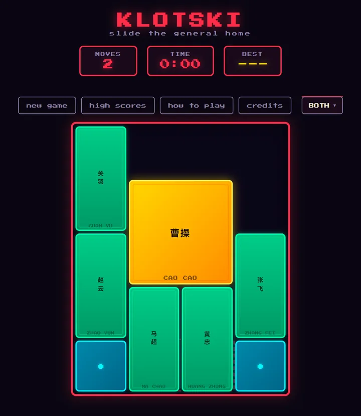
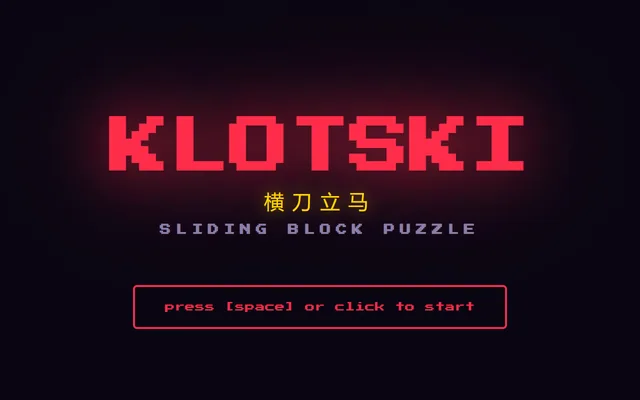
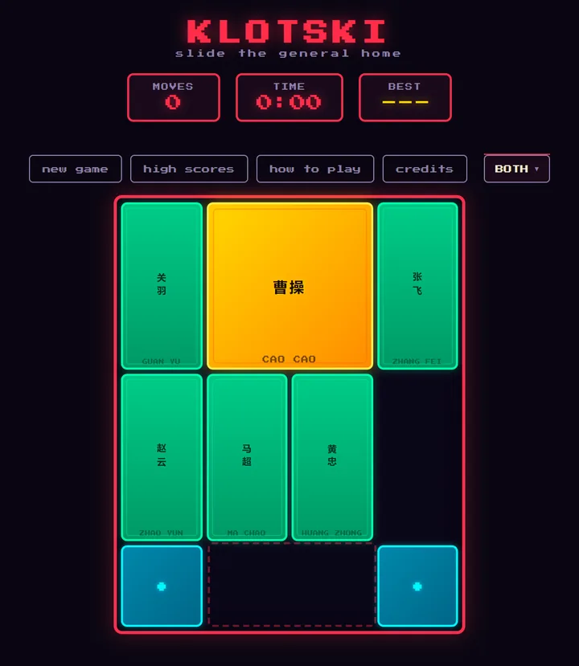

横刀立马 · slide the general to the exit
横刀立马: slide Cao Cao, the gold two-by-two block, past his generals and soldiers and out of the four-by-five board. Pieces only slide, never jump.
The text is in Chinese, English or both, in a neo-arcade take on new-age China.


game by magmacrunch media
original game Klotski (横刀立马), a traditional Chinese sliding block puzzle from the early twentieth century